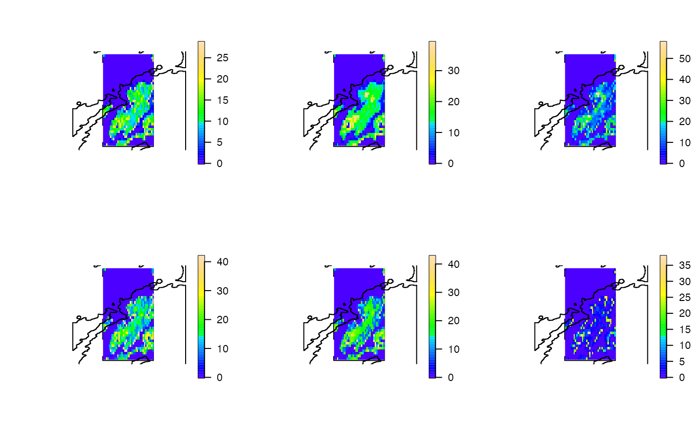

This function implements the `quick' depth-contour (DCQ) algorithm. As for the DC algorithm (dc), the DCQ algorithm relates one-dimensional depth time series to a two-dimensional bathymetry surface to determine the extent to which different parts of an area might have (or have not) been used, or effectively represent occupied depths, over time. However, a modified (binning) approach is used that is much faster. To implement the function, a list of depth time series, one for each time unit (e.g. month/season) need to be supplied, along with a bathymetry raster. For each time unit, the function counts the number of depth observations in each user-defined depth bin (e.g., 10 m depth bins) and then relates these counts to the local bathymetry to produce a raster in which the value of each cell is given by the number of times in which the depth bin for that cell was used. The function returns a list of rasters, one for each time unit, and a plot of these rasters, if requested.
dcq( archival_ls, bathy, bin = 10, transform = NULL, plot = TRUE, before_plot = NULL, after_plot = NULL, fix_zlim = FALSE, one_page = FALSE, cl = NULL, varlist = NULL, verbose = TRUE, ... )
Arguments
| archival_ls | A list of dataframes, with one element for each time unit (e.g., month), which contain depth time series to be related to the local bathymetry. Each dataframe should contain a column of depths (`depth') and a column that defines the time unit (`time_unit'). Depth should be recorded using absolute values in the same units as the bathymetry (see below). |
|---|---|
| bathy | A |
| bin | A number that defines the interval into which depth observations are binned. This should be provided in the same units as depths (see |
| transform | (optional) A function, such as |
| plot | A logical input that defines whether or not to plot the rasters. If |
| before_plot, after_plot | (optional) Stand-alone functions that are executed before and after the plot for each time unit is created, respectively. For example, it may be useful to plot the coast in an area before each raster is plotted, or add custom axes after each plot has been produced. |
| fix_zlim, one_page, ... | (optional) Plot customisation options. |
| cl, varlist | (optional) Parallelisation options. |
| verbose | A logical input that defines whether or not to relay messages to the console to monitor function progress. |
Value
The function returns a named list of rasters, one for each time unit, in which the value of each cell is the number of times that that cell was represented by the corresponding depth bin in the depth time series.
See also
This is a modified version of the DC algorithm implemented by dc. The ACDC algorithm (see acdc) extends the depth-contour algorithm by integrating information from acoustic detections of individuals at each time step to restrict the locations in which depth contours are identified.
Author
Edward Lavender
Examples
#### Define data for examples # Define archival time series with required columns ('depth' and 'time_unit') dat_archival <- dat_archival[order(dat_archival$timestamp), ] dat_archival$time_unit <- cut(dat_archival$timestamp, "weeks") # Define a list of dataframes with one element for each time unit archival_ls <- split(dat_archival, f = dat_archival$time_unit) # Define bathymetry data (and coastline data for plotting) bathy <- prettyGraphics::dat_gebco coastline <- prettyGraphics::dat_coast_around_oban #### Example (1) Implement the dcq() algorithm with 25 m bins dcq_maps <- dcq(archival_ls = archival_ls, bathy = bathy, bin = 25, plot = FALSE)#> flapper::dcq() called... #> ... Step 1: Checking user inputs... #> ... Step 2: Calculating the number of observations within each depth bin for each time unit... #> ... Step 3: Translating counts of observations within depth bins into maps...# The function returns a list of rasters, with one raster # ... for each time unit. dcq_maps#> $`2016-03-14` #> class : RasterLayer #> dimensions : 36, 36, 1296 (nrow, ncol, ncell) #> resolution : 0.004166667, 0.004166667 (x, y) #> extent : -5.545833, -5.395833, 56.34167, 56.49167 (xmin, xmax, ymin, ymax) #> crs : +proj=longlat +datum=WGS84 +no_defs #> source : memory #> names : layer #> values : 0, 1685 (min, max) #> #> #> $`2016-03-21` #> class : RasterLayer #> dimensions : 36, 36, 1296 (nrow, ncol, ncell) #> resolution : 0.004166667, 0.004166667 (x, y) #> extent : -5.545833, -5.395833, 56.34167, 56.49167 (xmin, xmax, ymin, ymax) #> crs : +proj=longlat +datum=WGS84 +no_defs #> source : memory #> names : layer #> values : 0, 4702 (min, max) #> #> #> $`2016-03-28` #> class : RasterLayer #> dimensions : 36, 36, 1296 (nrow, ncol, ncell) #> resolution : 0.004166667, 0.004166667 (x, y) #> extent : -5.545833, -5.395833, 56.34167, 56.49167 (xmin, xmax, ymin, ymax) #> crs : +proj=longlat +datum=WGS84 +no_defs #> source : memory #> names : layer #> values : 0, 4815 (min, max) #> #> #> $`2016-04-04` #> class : RasterLayer #> dimensions : 36, 36, 1296 (nrow, ncol, ncell) #> resolution : 0.004166667, 0.004166667 (x, y) #> extent : -5.545833, -5.395833, 56.34167, 56.49167 (xmin, xmax, ymin, ymax) #> crs : +proj=longlat +datum=WGS84 +no_defs #> source : memory #> names : layer #> values : 0, 4082 (min, max) #> #> #> $`2016-04-11` #> class : RasterLayer #> dimensions : 36, 36, 1296 (nrow, ncol, ncell) #> resolution : 0.004166667, 0.004166667 (x, y) #> extent : -5.545833, -5.395833, 56.34167, 56.49167 (xmin, xmax, ymin, ymax) #> crs : +proj=longlat +datum=WGS84 +no_defs #> source : memory #> names : layer #> values : 0, 3788 (min, max) #> #> #> $`2016-04-18` #> class : RasterLayer #> dimensions : 36, 36, 1296 (nrow, ncol, ncell) #> resolution : 0.004166667, 0.004166667 (x, y) #> extent : -5.545833, -5.395833, 56.34167, 56.49167 (xmin, xmax, ymin, ymax) #> crs : +proj=longlat +datum=WGS84 +no_defs #> source : memory #> names : layer #> values : 0, 2575 (min, max) #> #>#### Example (2): Implement the algorithm in parallel: dcq_maps <- dcq(archival_ls = archival_ls, bathy = bathy, bin = 25, plot = FALSE, cl = parallel::makeCluster(2L))#> flapper::dcq() called... #> ... Step 1: Checking user inputs... #> ... Step 2: Calculating the number of observations within each depth bin for each time unit... #> ... Step 3: Translating counts of observations within depth bins into maps...#### Example (3): Visualise the function outputs on one page # ... using standard options. # Examine results with 25 m bin dcq_maps <- dcq(archival_ls = archival_ls, bathy = bathy, bin = 25, plot = TRUE, one_page = TRUE)#> flapper::dcq() called... #> ... Step 1: Checking user inputs... #> ... Step 2: Calculating the number of observations within each depth bin for each time unit... #> ... Step 3: Translating counts of observations within depth bins into maps... #> ... Step 4: Mapping the results...# Examine results with a higher resolution bin dcq_maps <- dcq(archival_ls = archival_ls, bathy = bathy, bin = 5, plot = TRUE, one_page = TRUE)#> flapper::dcq() called... #> ... Step 1: Checking user inputs... #> ... Step 2: Calculating the number of observations within each depth bin for each time unit... #> ... Step 3: Translating counts of observations within depth bins into maps... #> ... Step 4: Mapping the results...#### Example (4): Plot customisation options # fix zlim to be constant across all plots to enable comparability dcq_maps <- dcq(archival_ls = archival_ls, bathy = bathy, bin = 5, plot = TRUE, one_page = TRUE, fix_zlim = TRUE)#> flapper::dcq() called... #> ... Step 1: Checking user inputs... #> ... Step 2: Calculating the number of observations within each depth bin for each time unit... #> ... Step 3: Translating counts of observations within depth bins into maps... #> ... Step 4: Mapping the results...# fix zlim using custom limits across all plots dcq_maps <- dcq(archival_ls = archival_ls, bathy = bathy, bin = 5, plot = TRUE, one_page = TRUE, fix_zlim = c(0, 5000))#> flapper::dcq() called... #> ... Step 1: Checking user inputs... #> ... Step 2: Calculating the number of observations within each depth bin for each time unit... #> ... Step 3: Translating counts of observations within depth bins into maps... #> ... Step 4: Mapping the results...# Transform the returned and plotted rasters by supplying a function to the # ... transform argument dcq_maps <- dcq(archival_ls = archival_ls, bathy = bathy, bin = 5, plot = TRUE, one_page = TRUE, transform = sqrt)#> flapper::dcq() called... #> ... Step 1: Checking user inputs... #> ... Step 2: Calculating the number of observations within each depth bin for each time unit... #> ... Step 3: Translating counts of observations within depth bins into maps... #> ... Step 4: Mapping the results...# Customise the plot further via before_plot, after_plot functions # ... and other arguments passed via ... E.g., note the need to include # ... add = TRUE because the raster plot is added to the plot of the coastline. dcq_maps <- dcq(archival_ls = archival_ls, bathy = bathy, bin = 5, plot = TRUE, one_page = TRUE, transform = sqrt, fix_zlim = FALSE, before_plot = function(x) raster::plot(coastline), after_plot = function(x) raster::lines(coastline), add = TRUE, col = topo.colors(100))#> flapper::dcq() called... #> ... Step 1: Checking user inputs... #> ... Step 2: Calculating the number of observations within each depth bin for each time unit... #> ... Step 3: Translating counts of observations within depth bins into maps... #> ... Step 4: Mapping the results...#> Warning: Discarded datum WGS_1984 in CRS definition, #> but +towgs84= values preserved#> Warning: Discarded datum WGS_1984 in CRS definition, #> but +towgs84= values preserved#> Warning: Discarded datum WGS_1984 in CRS definition, #> but +towgs84= values preserved#> Warning: Discarded datum WGS_1984 in CRS definition, #> but +towgs84= values preserved#> Warning: Discarded datum WGS_1984 in CRS definition, #> but +towgs84= values preserved#> Warning: Discarded datum WGS_1984 in CRS definition, #> but +towgs84= values preserved